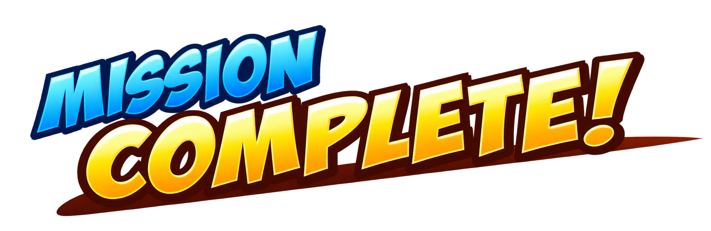

Actualización: estas mejoras ya están incluidas en la 1.0.23 publicada. El aviso de publicación pendiente que aparece debajo describe el estado de esta entrega cuando se preparó.
BASEBALL HEROES · CANDIDATO 1.0.22 · 22 OCT 2026Misiones y trofeos con más relieve
Preparada y probada localmente; todavía no publicada. La web sigue en 1.0.18. Railway aún mantiene pendientes los despliegues para Free y Trial según su actualización de 19:42 UTC. La biblioteca 1.0.22 está verificada en el volumen, sin activar. Estado oficial.
Se añaden siete cuadros ilustrados: cuatro copas, una silueta bloqueada, una estrella de habilidad y el rótulo de misión completada. Las cuatro categorías de misión reutilizan arte existente. Las capturas proceden del ejecutable real en Chrome y de la misma carrera QA en ambas versiones. Los hitos y objetivos se completaron solo en esa cuenta de prueba; un jugador nuevo sigue empezando en nivel 1, Rookie, 6,000 Coins y sin lentes.
Incluye las mejoras pendientes de 1.0.19, 1.0.20 y 1.0.21. Notas, sprites y prompts · Versión pública 1.0.18.
Misiones con ilustraciones compartidas
Las cuatro categorías sustituyen sus dibujos simples por ilustraciones: marcador, casco, fichaje y estadio. Tres proceden de los sprites originales recuperados anteriormente; el marcador reutiliza la reconstrucción de BUILD. El punto de habilidad utiliza una estrella con facetas.
 Antes · candidato 1.0.21
Antes · candidato 1.0.21 Después · candidato 1.0.22
Después · candidato 1.0.22Un cierre de misión más cercano a la referencia
MISSION COMPLETE! pasa a ser un rótulo ilustrado azul y dorado, con contorno y movimiento gráfico. El premio tiene espacio entre el icono y su texto. Las condiciones y los importes siguen siendo los del modelo anterior.
 Antes · candidato 1.0.21
Antes · candidato 1.0.21 Después · candidato 1.0.22
Después · candidato 1.0.22Objetivos y avisos en español
Se traducen siete etiquetas de objetivos que seguían en inglés. Incluyen entrenamiento, nivel del héroe, hits contra pichadas, victorias por una carrera y partidos con tres singles. Los nombres de menús y los términos habituales de béisbol se conservan.
 Antes · candidato 1.0.21
Antes · candidato 1.0.21 Después · candidato 1.0.22
Después · candidato 1.0.22Copas de bronce, plata, oro y diamante
HALL OF FAME usa copas ilustradas con reflejos y una silueta oscura para los hitos bloqueados. Las cuatro copas mantienen el centro y la altura de las anteriores. El saldo difiere porque entre estas capturas se cobraron las misiones de prueba.
 Antes · candidato 1.0.21
Antes · candidato 1.0.21 Después · candidato 1.0.22
Después · candidato 1.0.22Detalle del hito
La copa correspondiente acompaña el progreso y el premio. Los avisos de meta alcanzada y premio recibido están en español. Los cuatro niveles se probaron con premios de 2,000, 4,000, 8,000 y 16,000 Coins, sin duplicarlos.
 Antes · candidato 1.0.21
Antes · candidato 1.0.21 Después · candidato 1.0.22
Después · candidato 1.0.22Premios comprobados
- Previsualizar o pulsar LATER no paga el premio. Dos clics rápidos en CLAIM entregan una sola recompensa.
- Las tres misiones de Coins pagan 800, 750 y 820 una sola vez. La misión de estadio añade un punto de habilidad sin sumar Coins.
- Los cuatro niveles de trofeo pagan una sola vez. Un hito bloqueado o ya recibido no permite volver a cobrar.
- Los reclamos y los saldos se conservan después de recargar. Se revisaron las tres páginas de HALL OF FAME y el regreso a misiones y HOME.
 Estrella y texto separados
Estrella y texto separados Reclamo conservado después de recargar
Reclamo conservado después de recargarEspacio recuperado en el servidor
La preparación detectó el volumen lleno. Se retiró únicamente una carga incompleta de 27,1 MB, cuyo tamaño y hash parcial se comprobaron antes de borrarla. Después, 565 copias idénticas de recursos pasaron a compartir espacio mediante enlaces duros. Se comprobaron los hashes de 678 archivos; se conservaron todas las versiones completas y sus bytes.
La biblioteca nueva enlaza los 113 recursos que ya existían y añade su ejecutable. Tras guardarla quedaron aproximadamente 128 MiB libres. Los 114 archivos de juego de la versión pública siguen coincidiendo con su manifiesto; SQLite pasó la comprobación de integridad en modo de solo lectura. No se reiniciaron cuentas ni carreras.
Recuperación de espacio y hashes · Biblioteca preparada · Versión pública y SQLite
Referencia y procedencia
Los siete cuadros nuevos son reconstrucciones con image_gen integrado. Se usaron el HALL OF FAME de 14:34 y la misión completada de 11:00 como referencias. No se presentan como recursos originales recuperados. El arte generado completo se conserva en el proyecto con transparencia, sin edición de imágenes mediante Python.
 Referencia original · cuatro colores de copa
Referencia original · cuatro colores de copa Referencia original · misión completada
Referencia original · misión completadaCopas, silueta bloqueada y estrella
MISSION COMPLETE! · archivo conservado Herramienta, prompts y referencias · Cuadros y transparencia · Pruebas locales · Paquete y conservación · Publicación pendiente
Las vistas comparten sus cuadros y el rótulo se divide en tiras de hasta 1024 píxeles para evitar una textura excesivamente ancha. Se conservan las reglas, los premios, el guardado v24, la cabeza aprobada, BUILD y Rookie. El SWF aumenta unos 2,33 MB; no se promete una mejora general de FPS. Las pruebas HTTPS de la nueva entrega siguen pendientes del proveedor.